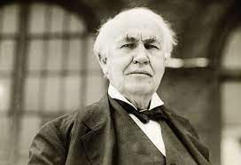
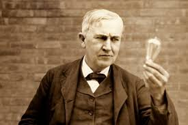
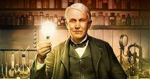
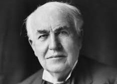
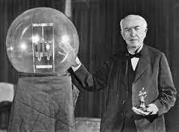

Thomas Alva Edison was born in the 11th of February, 1847 in Milan, Ohio. He was the seventh and last child of Samuel Ogden Edison and Nancy Matthews Elliott. Edison was taught reading writing and arithmetic by his mother, who used to be a school teacher. He was a very curious child who used to learn most things by reading on his own.
 Thomas Edison began his career selling candy, newspapers and vegetables. He turned a $50, a week profit by age 13, most of which went to buying equipment for electrical and chemical experiments. When he grew up, he became an American inventor and businessman who has been described as America's greatest inventor. He developed many devices such as the phonograph, the motion picture camera and the early version of the electric light bulb, which was one of the main reasons he became successful in life.
Edison died of complications of diabetes, on October 18, 1931 is in his home which he had purchased in 1886 as a wedding gift for Mina Miller.
 